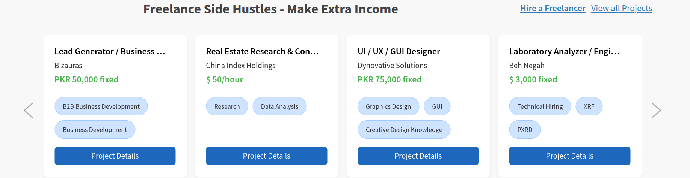
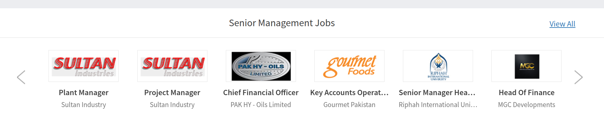
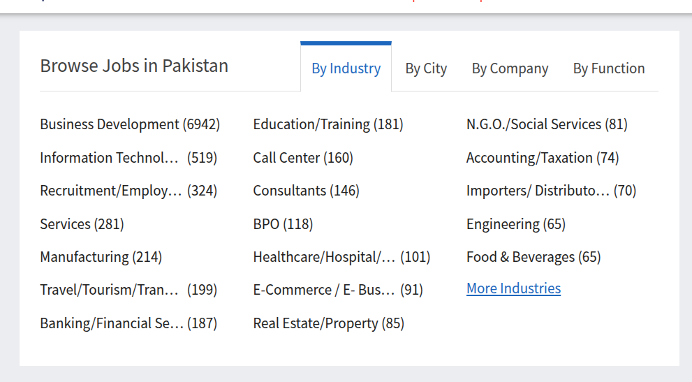

Logic to render different categories of jobs in different secitons on homepage
Cost = 4000
ETA = 3-4 days
Designs like:
 |
 |
 |
Cost = 500 (designer)
ETA = 1d
Social media icons on bottom right should expand up with an animation from an icon.
Cost = 500
ETA = 1d
If exceeds 10 posts, then add pagination slider to move to next 10.
Cost = 1500
ETA = 2-3 days.
| # | Task | Cost | ETA |
|---|---|---|---|
| 1 | Category Rendering Logic | 4000 | 3–4 days |
| 2 | Category-Wise Designs | 500 per section | Depends on sections |
| 3 | Footer Image Vector Design | 500 | 1 day |
| 4 | Icons Expand with Animation | 500 | 1 day |
| 5 | Post Slider Limit | 1500 | 2–3 days |
Total Cost = 7,500 + (500 for each section)